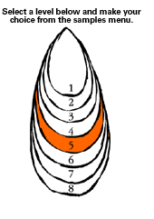
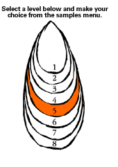

Level 5: Landscapes, Signs, and Symbols
PLANNING AND ASSESSMENT
Throughout the unit or lesson, teachers should be conferencing both individuals and groups of students whilst encouraging them to respond to and reflect on their own work and the work of others by:
- reinforcing their knowledge of basic elements and principles
- focusing on specific principles using images and artists' work for reference.
The following elements and principles will be the focus for discussion in this learning example. Study the use of these in artists' works first.
Elements
- Space – focus on the aerial perspective and linear perspective used in traditional approaches to landscape, ("the landscape tradition"), and the flattening of space in contemporary approaches to landscape.
- Texture – focus on surface texture in student's series of works.
- Colour – focus on the naturalistic, expressive and symbolic use of colour and its use to suggest or flatten space.
Principles
Involves studying the conventions of traditional landscape painting, and the devices used by contemporary artists to break up the picture plane:
- Balance, harmony, unity and tension as part of composition
- Contrast – of scale, colour, shape, tone etc.
More information on art elements
Index of Wallace
http://www.cyberschool.k12.or.us/~wallace/
ARTLEX directory
http://www.artlex.com
Possible starting points
- Discuss landscape as a genre/art form.
- Students bring examples of different types of landscape art, including photos, postcards, photocopies etc. They can also take photographs of their own. (This is useful later in the unit).
- Teacher provides visual resources to stimulate interest – on the walls, books, slides etc.
- Discuss the preoccupation of New Zealand artists and their audience with "landscape".
Possible questions
- What typical geographical features does New Zealand have in comparison with other countries?
- What kinds of topography and climate do we have?
- How many New Zealand TV programmes, books, and films can you think of which have the landscape as a theme?
- Name some historical New Zealand events that feature the land
- What significance does "the land" have for Māori culture?
- What is the meaning of the word "Aotearoa"?
- What significance does "the land" have for European cultures?
[Back To Top]
Possible learning approaches
Artist studies
Study with the class the beginnings of landscape as a genre in New Zealand. This could include topographical landscape works, (Heaphy, Fox, Earle); romantic landscape traditions, (John Gully, Van der Velden, Hoyte, O'Brien); and regionalism, (Perkins, William Sutton, Rita Angus, Doris Lusk).
Analyse and compare examples of works and styles chronologically.
Possible questions
Topographical landscapes.
- What was the intention of the artist?
- What background and training did these first New Zealand landscape artists have?
Romanticism
Compare works to romantic landscapes from Europe/Britain.
- To what extent do these works look like New Zealand? (Examine the geographical features, rock, landforms and the use of light and colour.)
- Did the artist make a faithful record of the scene? Why, why not? What were the aims of the artist, for example to evoke feelings or a particular mood?
- What background and training did these romantic artists have?
Regionalism
- In what ways is the regionalist style different from the romantic or topographical style?
- What New Zealand features can you see in these works?
Teaching notes
Topographical landscapes
The first New Zealand landscapes were a documentary record of European contact with this land. Many of these works were for the purpose of surveying and showed initial settler contact with the land and first records of its topography. Many of these artists were untrained – some were surveyors. Many works were done on the spot and while travelling, so artists used suitable media (watercolour pencil etc).
Some typical features
- The detail of indigenous vegetation and land features.
- Recording of Māori and settler activities on the land.
Romantic landscapes
These were made by some of New Zealand's first professional, trained artists. While they looked to European styles as their model, these artists often wanted to capture a sense of New Zealand and many of these works show a careful observation of the landscape, compared to mystical British interpretations of landscape (Turner).
Some typical features
- Use of atmospheric (aerial) perspective
- Layering of space
- The use of a dominant land feature to lead the eye back into space (road, building, clump of trees etc)
- The use of framing devices
- The use of strong light and dark contrasts to evoke emotion
- The use of expressive brushwork to evoke emotion
Regionalist landscapes
The regionalists aimed to paint New Zealand as it was. They wanted to move away from British influences and find a style unique to New Zealand. They did this by exaggerating what they thought were typical New Zealand features like the light and colour they saw in this country.
Some typical features
- Simplification of shapes
- The use of outline
- Harsh light/dark contrasts
- Using settlement of the land and small town life as subject matter
Practical activities for students
Students choose to work in the style of a topographical, or a romantic or a regionalist artist.
Instructions for students
Make a series of drawing and compositions for use in later work.
Compositions
Make four compositions using the typical features of the style you are working in. Look closely at the artists' works and incorporate their stylistic and compositional devices in your own works.
Tonal drawings
Choose your best compositions for two to three larger drawings. Use the tonal techniques characteristic of your selected style, for example strong contrasts, outline and simplified detail (regionalist) or very soft tonal transitions and a large tonal range within a work (romantic etc) or a focus on detail (topographical).
Use a range of dry media, such as pencil, charcoal, crayon, pastel, and ink chalk
Moving to the present
Artist studies
Present to the class and discuss with students selected works by Rosalie Gascoigne, Colin McCahon, Ralph Hotere, Nicky Forman, Shane Cotton. Choose works that use a composite or grid composition to combine landscape elements with signs, symbols and words.
Discussion points could include:
- Composition types and devices used
- Repetition and juxtaposition of images
- Contrasts of scale and viewpoint
- Stylistic conventions used to link the composition for example using colour, shape, repetition, etc.
- Artists intention and message or themes
Students sketch or paste photocopies of three to four works by the artists whose work is studied in their workbooks and record their responses to the discussion points around their drawings
Practical activities
Students could make their own collection of drawings of signs, road signs, structures on the land, and symbols. They should make notes beside the sketches about the associations (for themselves) of the objects/signs chosen.
Using tone and line they could accurately record the subject matter, capturing some of the setting or context from which the image comes.
Students could also collect reproduced images of signs, symbols and text etc.
Compositions
Using the composition devices studied earlier in the artist studies, each student makes four compositions, which combine their earlier landscape drawings with their signs and symbols drawings.
Remind them to:
- use grid or layering devices
- use different scales and views of the land
- include text in at least one idea.
Collages
While the students have studied the artist models primarily for their composition devices, some of the artist works may also be suitable examples of monochrome, textured collages (Hotere, Gascoigne).
Instructions to students:
- Choose your best compositions from which to make a series of collage works.
- Paint a white or browny/red ground to make a surface on which to build your collage.
- Sketch in your composition.
- Photocopy your original drawings to build a collection of images to use for the collage. Use a range of toned paper, overdrawing, and stencils to define subject matter.
- Cover at least two-thirds of the ground with different toned papers (include photocopies) to build the main shapes of the composition. Use wet media (ink/ocaldo wash) to add tone over some parts of the image. When it dries, draw over the image to add more tone and definition to the subject matter.
- Keep building up these wet and dry layers until a rich surface is achieved, based on your original composition (you can add, delete and change elements as you go).
- Combine a range of tones. Use a range of textures that relate to the objects/images they represent.
Extension options
Students could make colour collages or paintings based on their monochrome collages. They could study the paint techniques and colour use seen in the works of artist models, then make colour studies in preparation for their own larger colour works.
[Back To Top]
Materials
The following materials are useful in this activity:
- A range of papers, pencils, willow and Pitt charcoal, crayons for drawings.
- Useful media for monochrome collage are a range of charcoal, pastels, graphite, pencil, biro shellac or varnish, ink, ocaldo washes. Stencils are useful too.
Assessment
Possible specific learning outcomes include:
Students will be able to:
- describe and evaluate how different styles and techniques are used to communicate particular meanings in landscape works (their own and those of the artists studied) (CI)
- use collage processes and materials effectively in series of works (PK)
- use appropriate drawing conventions and materials to make a series of landscape drawings based on their chosen landscape tradition (romantic, regionalist or topographical) (PK)
- generate, develop and refine a series of compositions based on their study of contemporary landscape works (DI)
- investigate the relationship between traditional and contemporary landscape approaches and their social context (UC).
[Back To Top]
|

 
